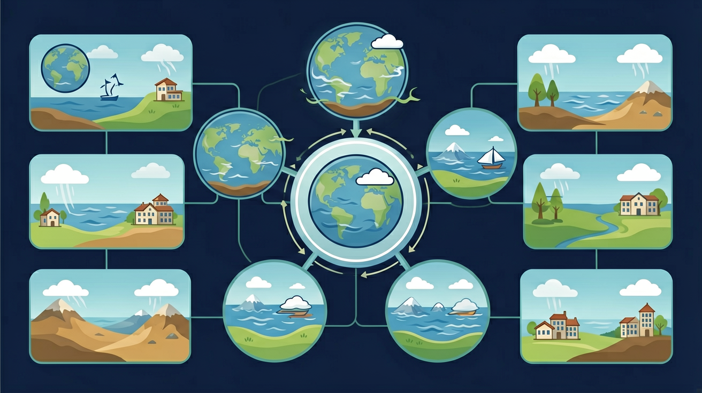
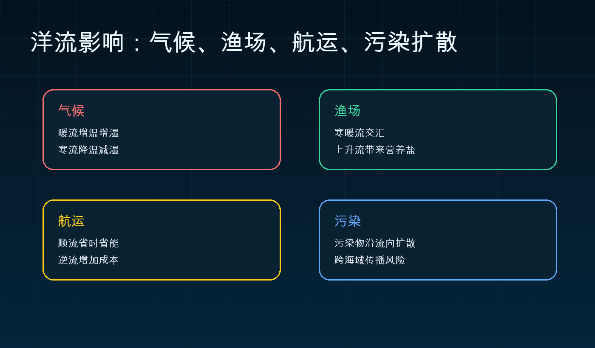
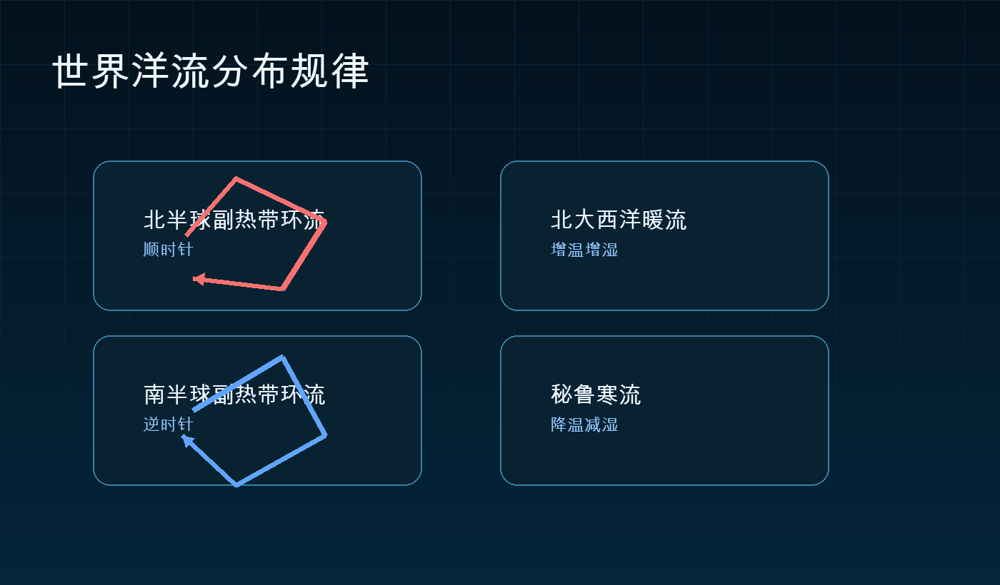

Interactive Canvas
互动：风带和纬度如何组织洋流？
拖动信风/西风强度，观察中低纬大洋环流箭头、上升流和渔场潜力如何变化。
信风较强时，低纬表层海水西移，东岸上升流和渔场潜力增强。
同纬度的海岸，为什么有的温暖湿润，有的寒冷干旱？答案常藏在海水的流动方向、寒暖性质和能量输送里。

先读世界洋流图，再用 Canvas 模型解释寒暖流，最后迁移到气候、渔场、航运和污染扩散。
选择后，后面的例子会围绕你的问题展开。
判断某条洋流对沿岸气候的影响，最关键的第一步是什么？
图层说明：红色实线表示主要暖流，蓝色虚线表示主要寒流；点击图层按钮可开关寒暖流。投影说明：本图使用等距圆柱投影的教学底图，高纬地区面积有拉伸；本课只用于定位洋流大致空间关系，不用于精确量算面积。
拖动信风/西风强度，观察中低纬大洋环流箭头、上升流和渔场潜力如何变化。
秘鲁沿岸位于副热带东岸，附近有秘鲁寒流和离岸风。最关键机制是什么？


北大西洋暖流对西欧沿岸的主要影响是？
若日本东部近海发生漂浮污染物泄漏，判断它长期扩散方向时，最应该参考什么？
第一，看方向；第二，看寒暖性质；第三，看它影响了谁。用这三条线索，可以解释气候差异、渔场形成、航运路径和污染扩散。
方向寒暖性质气候影响渔场人类活动
前置知识：水循环、全球大气环流。后续知识：气候变化、河流特征与开发利用。